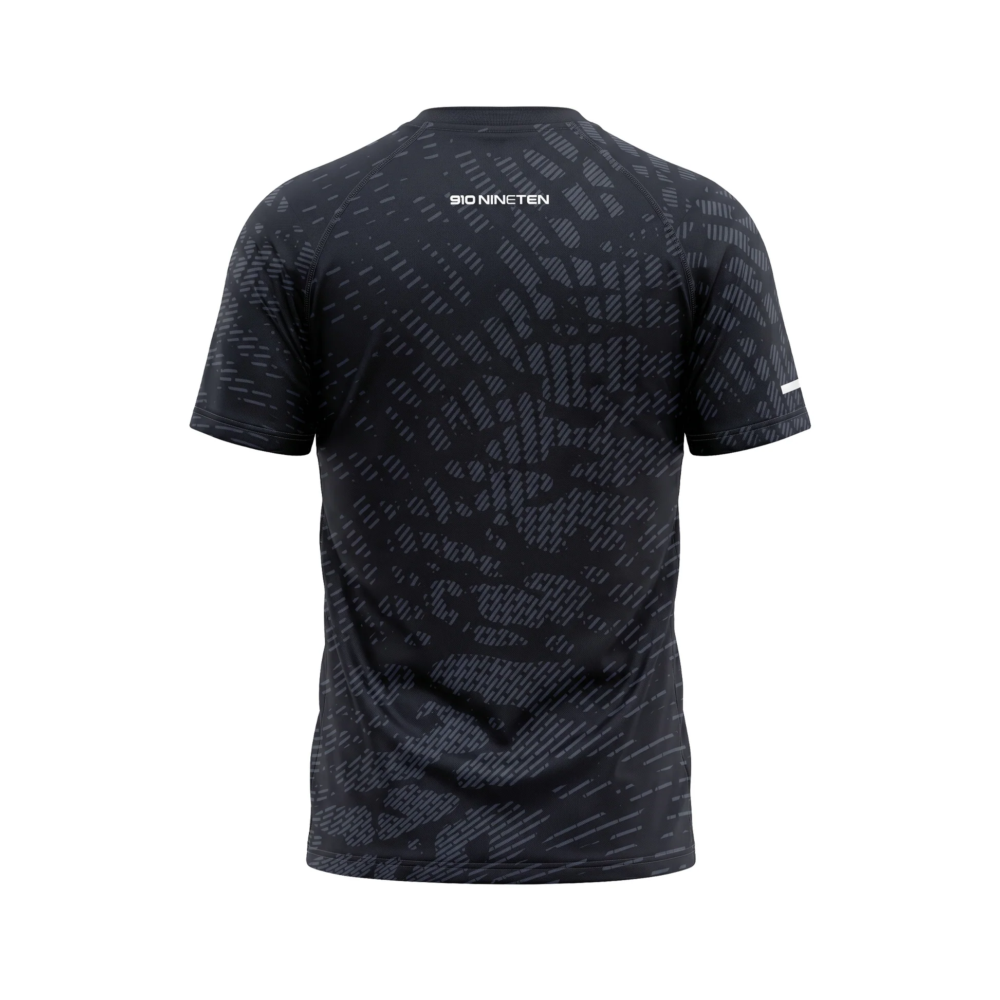

Tentang Kami
Walkduk adalah sebuah brand pakaian untuk olahraga bahan premium sejak 2026.

Mengapa Memilih Kami?
- Bahan sangat premium
- Jahitan sangat rapih
Cara Pemesanan
- Pilih produk dan jumlah
- Hubungi kami melalui WhatsApp
- Lakukan pembayaran, pesanan dikirim
Produk dan Harga
| Produk | Ukuran | Harga |
|---|---|---|
| Jersey Running corak putih | S - XXL | Rp.35.000 |
| Jersey Running corak hitam | S - XXL | Rp.35.000 |
| Jersey Running corak merah | S - XXL | Rp.35.000 |

Hubungi Kami
Jl. Profesor DR. HR Boenyamin No.78
Banyumas, Jawa Tengah